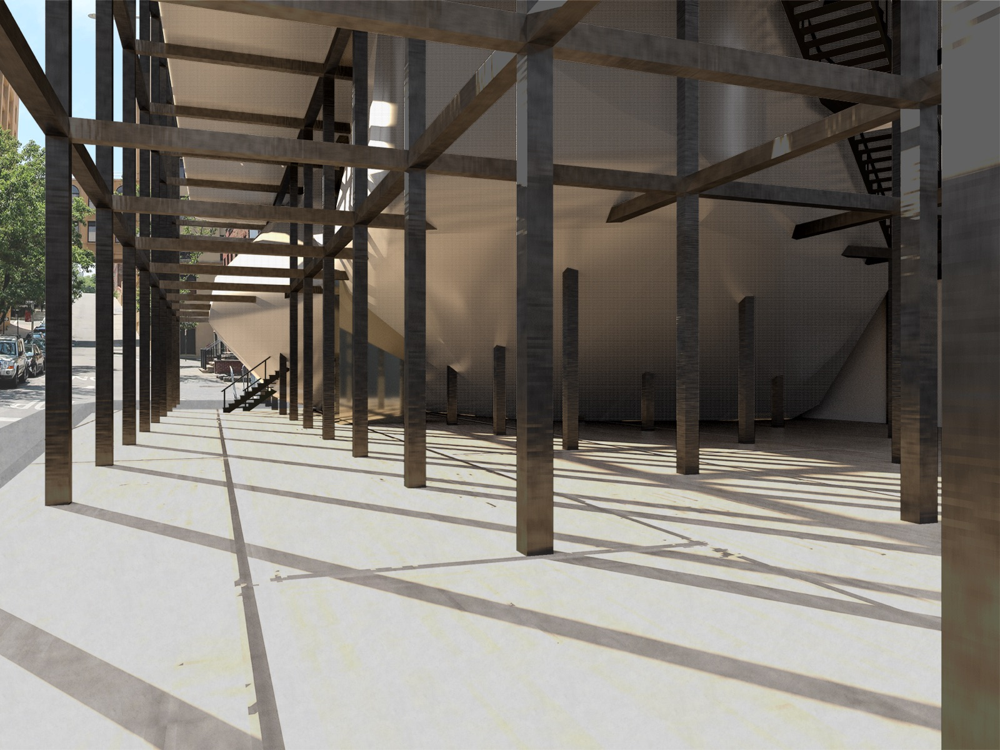
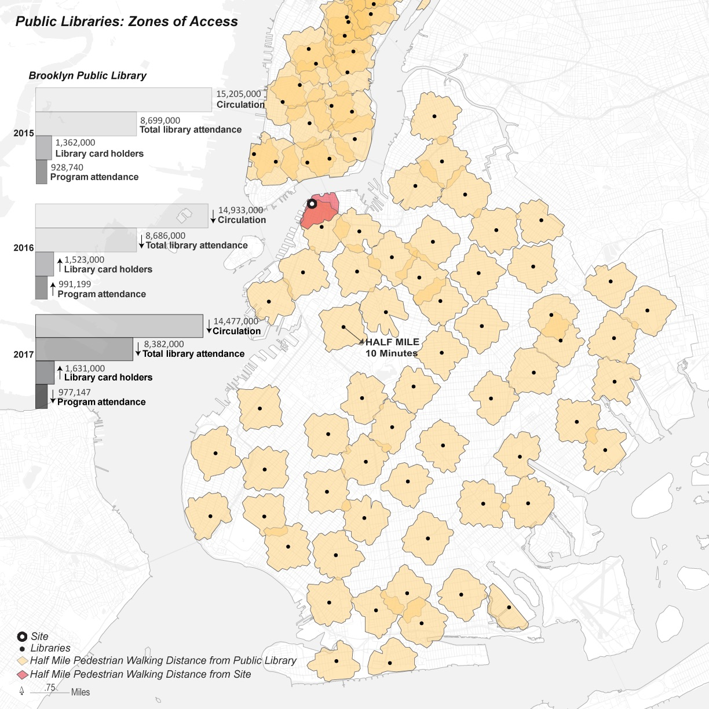
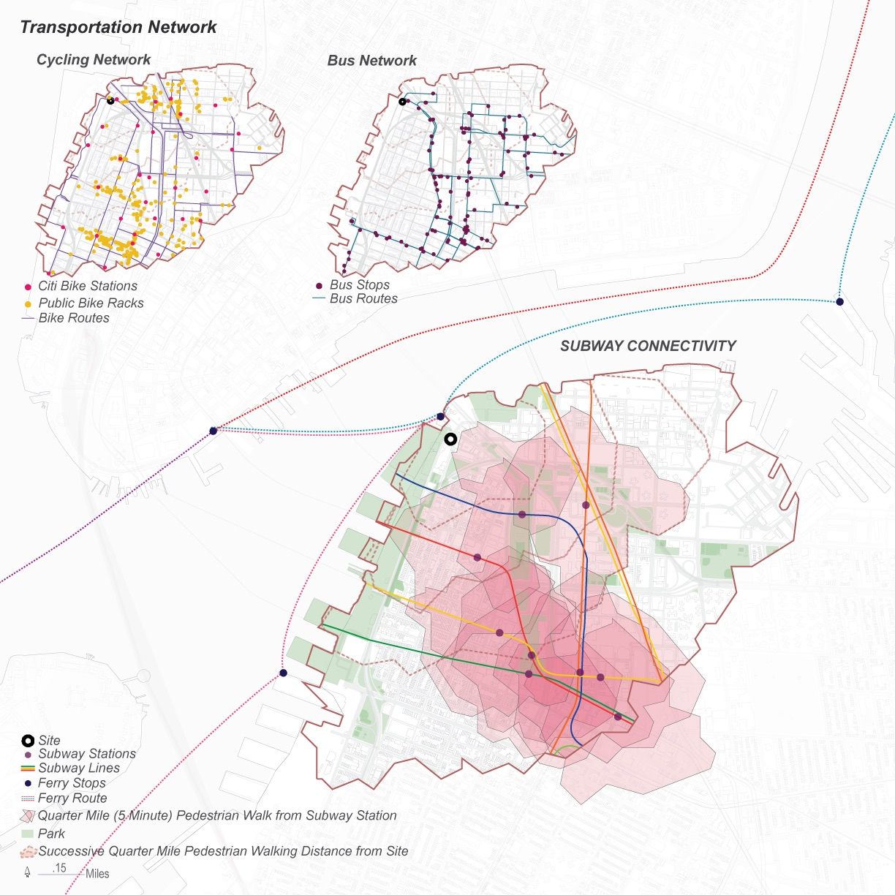
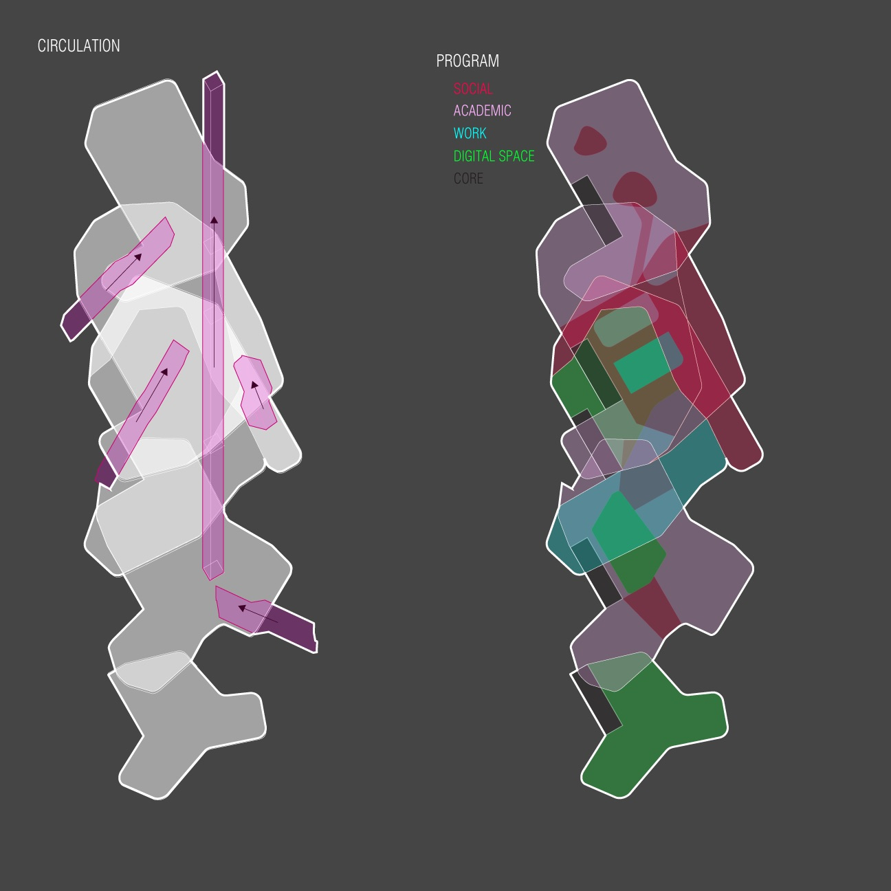
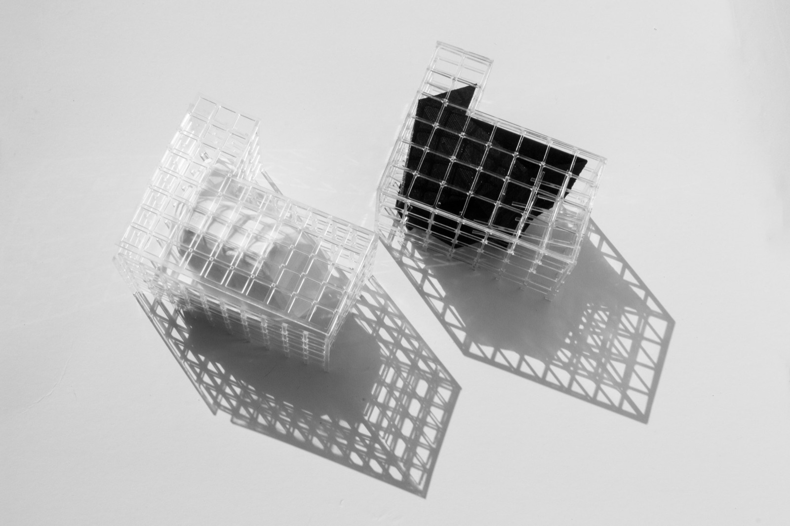

The 20-minute library
A public library for Dumbo, Brooklyn, designed research-first: map who could walk to the site, then shape the building around them.

01Context
Who would actually use a library here? Dumbo is residential, packed with tech companies and schools, about a 10-minute walk from the subway, and busy with tourists.

02Approach
Inside that zone, a close look at how people get around, the neighborhood’s character, wealth and commute times showed a mix of residents, tech workers and visitors. Two parks border the site, so the concept pulls Dumbo’s waterfront open space into the building.


03Outcome
A building meant to be open to regulars and passersby alike, with mixing spaces between related programs and an interior almost free of steel beams.

Citi Bike access

Say hello.
Working on something for the built environment? I’d love to hear about it.